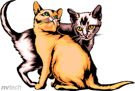

Small Moments of Rest
A quiet afternoon can be a good time to slow down, observe simple things, and enjoy a peaceful moment away from a busy schedule.
Cats often make these moments feel even calmer because they can turn an ordinary corner into a comfortable place to rest.
